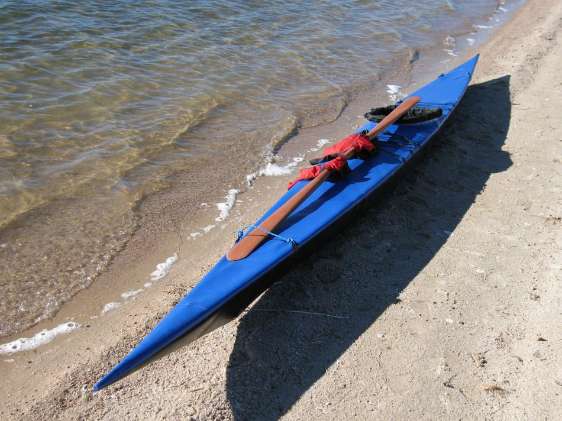

| (New) Sea Glider by Tom Yost (US) | Menu Previous Page Next Page |
|

The Sea Glider (19.2ft X 18in) / (584cm X 45.7cm) is the longest and narrowest folder in the manual. It has good tracking and turning, and is more stable than it's narrow beam would indicate. Fore and aft deck zippers are still to be added. The following Link to the Designs Menu contains several pages of "Sea Glider" pics.
Use the {BACK} key to return. |
|